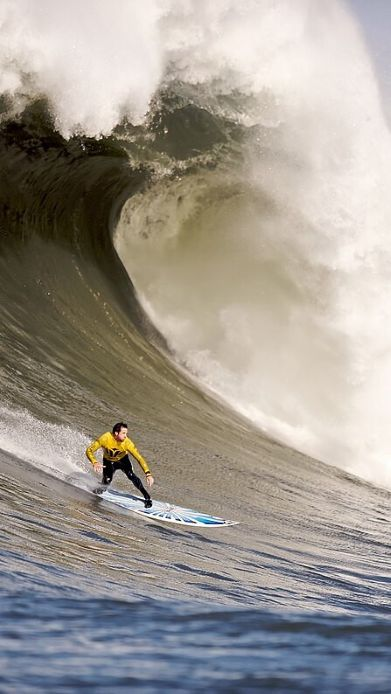

Images
What kind of photos are good to encode using JPEG?
Photos with many colors are good to ecode using JPEG
What kind of photos are good to encode using GIF?
Photos with limited colors and simple graphic or animations are good to encode using GIF
What is unique about the PNG format?
PNG supports lossless compression and transparency
How do you resize your photo to the size it should be displayed?
Resize photo by using photo editing software to set its width and height
Why should you resize photos using photo editing software instead of resizing it using CSS?
You should resize photos to make them smaller and make your webpage load faster, instead ofjust stretching or shrinking them with CSS